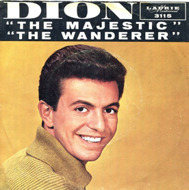

Day 18

Dion - The Wanderer - 1961
我第一次听到这首歌是在老滚4的预告片里。
Oh well, I'm the type of guy who will never settle down
Where pretty girls are, well you know that I'm around
I kiss 'em and I love 'em cause to me they're all the same
I hug 'em and I squeeze 'em they don't even know my name
They call me the wanderer
Yeah, the wanderer
I roam around, around, around
Oh well, there's Flo on my left and then there's Mary on my right
And Janie is the girl well that I’ll be with tonight
And when she asks me, which one I love the best?
I tear open my shirt and I show "Rosie" on my chest
Cause I'm the wanderer
Yeah, the wanderer
I roam around, around, around
Oh well, I roam from town to town
I go through life without a care
And I'm as happy as a clown
I with my two fists of iron but I'm going nowhere
Oh yeah, I’m the type of guy that likes to roam around
I’m never in one place, I roam from town to town
And when I find myself a-fallin' for some girl
Yeah, I hop right into that car of mine and drive around the world
Yeah I'm the wanderer
Yeah, the wanderer
I roam around, around, around
Oh yeah, I'm the type of guy that likes to roam around
I'm never in one place, I roam from town to town
And when I find myself a-fallin' for some girl
I hop right into that car of mine and drive around the world
Yeah, cause I'm a wanderer
Yeah, a wanderer
I roam around, around, around, around, around, around
Cause I'm a wanderer
Yeah, a wanderer
I roam around, around, around, around, around, around, around
Cause I'm a wanderer
I'm, a wanderer
I roam around, around, around, around